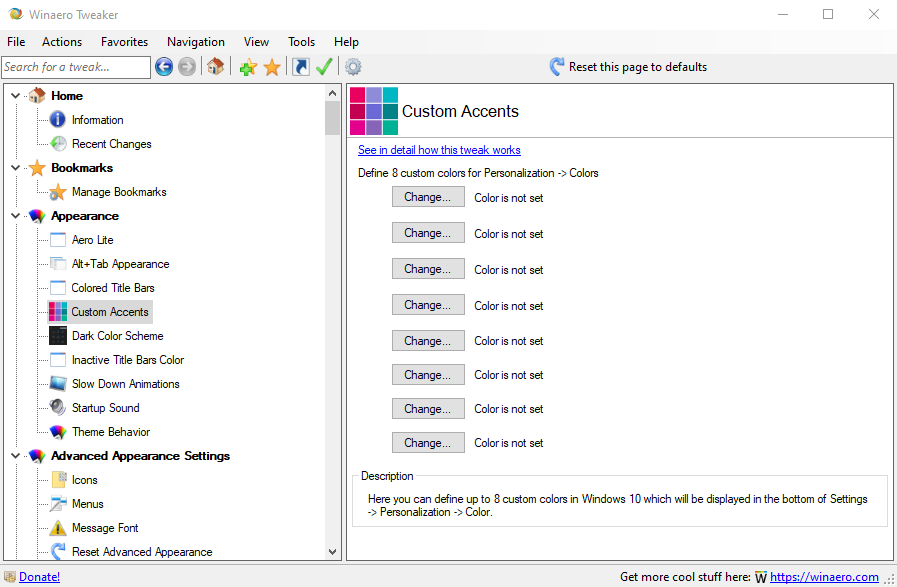

Winaero Tweaker
Рисунок 1 - Winaero Tweaker
Winaero Tweaker — это хорошо известная пользователям утилита. Её последняя версия содержит всё необходимое для тонкой настройки Windows 10 в одном компактном интерфейсе. Здесь вы найдёте полную информацию о компонентах, операционной системе и установленных программах, ссылки на все важные системные утилиты и набор полезных твиков, улучшающих внешний вид и стабильность Windows.
Установка не отличается чем-то особенным. Все происходит так же, как и в программе WindowBlinds.
Рисунок 2 - Процесс установки
Рисунок 3 - Интерфейс программы
В этой программе невероятно огромное количество настроек Windows. Самые ходовые из них — это оформительные на вкладке «Appearance» (Рисунок 4). Здесь можно поменять размеры шрифтов, внешний вид рабочего стола и многое другое.
Рисунок 4 - вкладка «Appearance»
Так же эта утилита позволяет установить на ваш ПК классическую тему Windows 7, приложения и игры.
Рисунок 5 - вкладка «Classic Games from Windows 7»
Лучше всего перед началом работы сделать точку восстановления Windows 10, чтобы в случае изменения системных файлов вы смогли вернуться к начальным настройкам. Отмена изменений происходит очень просто. Заходите в настройку, которую меняли, выбираете ее и жмете на кнопку «Reset this page to defaults», которая находится в правой части ленты.
Опробовать работу программы я решила на простейшей настройке, дабы не перегружать мой маломощный ноутбук. Поменяем тему панели задач и приложений.
Для этого выполняем ряд шагов:
1. На вкладке «Advanced» ищем настройку «Dark Color Scheme»;
2. Заходим в нее и нажимаем на необходимые галочки.
Изначально у меня стояла светлая тема приложений и темная тема панели задач (Рисунок 6). Убрав галочку «Apps Use Light Theme», я увидела, что мой браузер моментально изменил тему на темную (Рисунок 7)

Рисунок 6 - Первоначальный вид рабочего стола
Рисунок 7 - Рабочий стол после изменений
Далее я решила попробовать изменить цвет рабочего стола с помощью функции «Custom Accent».
Все так же просто, как и с прошлой настройкой. Выбираем цвет, на который хотим поменять тему, далее через "Пуск" заходим в Параметры -> Персонализация-> Цвета, выбираем цвет (я выбрала фиолетовый), который появился в «Недавно использованные цвета» и наблюдаем за изменениями. У меня изменился цвет панели задач, окно "Пуск" и тема системных приложений.
Рисунок 8 - Рабочий стол после изменений
В целом, программа удобна в использовании, но англоязычный интерфейс затрудняет процесс работы, так как без переводчика трудно понять, какие конкретно настройки надо поменять и каким образом это делается. Но это, пожалуй, единственный минус утилиты. Так же стоит отметить, что многие настройки приложения уже имеются в ОС, как например изменение темы рабочего стола, но все равно хотелось проверить, как она работает в этой программе.